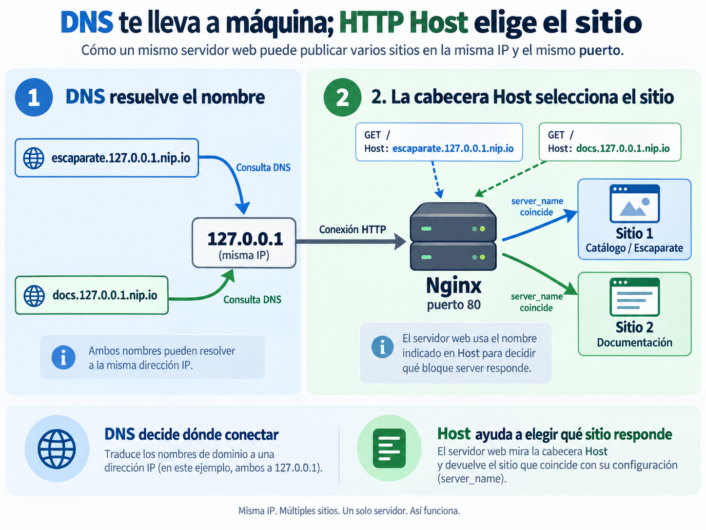

🌐 Servidores web y DNS¶
Descarga de diapositivas
En el Tema 2 conseguiste levantar Escaparate como un conjunto reproducible formado por app y bd. Hasta ahora, el navegador accedía directamente a Spring Boot mediante el puerto publicado de la aplicación.
En este tema aparece una nueva capa: Nginx se convierte en la puerta de entrada HTTP. Servirá directamente los recursos estáticos y permitirá que la aplicación Java quede detrás, dentro de la red del despliegue.
Mapa de la sesión
Separar → publicar → nombrar → diagnosticar → optimizar
Hoy estudiaremos la entrega de contenido estático, los hosts virtuales, la relación entre DNS y HTTP y algunas políticas que un servidor web puede aplicar a los recursos que sirve.
🗂️ 1. Qué aporta un servidor web¶
Un servidor web escucha peticiones HTTP y devuelve respuestas HTTP. Cuando sirve contenido estático, relaciona una URL con un fichero y lo entrega con las cabeceras apropiadas.
Por ejemplo, si la raíz del sitio es:
| Text Only | |
|---|---|
una petición a:
| Text Only | |
|---|---|
puede terminar leyendo:
| Text Only | |
|---|---|
La raíz de documentos marca desde dónde se buscan los recursos públicos. Por eso no deben aparecer accidentalmente dentro de ella secretos, copias de seguridad, scripts SQL o ficheros internos.
1.1. Estático y dinámico¶
Un servidor web y una aplicación no cumplen exactamente la misma función:
| Petición | Quién produce la respuesta |
|---|---|
| HTML, CSS, JavaScript e imágenes | Nginx lee y entrega el fichero |
/api/... |
Spring Boot ejecuta lógica y genera la respuesta |
En nuestro despliegue, Nginx podrá recibir ambas peticiones, pero no las resolverá de la misma forma:
| Text Only | |
|---|---|
El reenvío dinámico aparecerá hoy únicamente como conexión con el backend. En la siguiente sesión estudiarás el proxy inverso con detalle.
1.2. Apache y Nginx¶
Apache HTTP Server y Nginx son servidores web maduros capaces de servir estáticos y actuar como proxy. No existe una regla general que convierta a uno en «mejor» que al otro.
En este módulo utilizaremos Nginx porque la misma herramienta nos permitirá estudiar progresivamente:
- contenido estático y hosts virtuales;
- proxy inverso y balanceo;
- HTTPS y control de acceso;
- logs y observabilidad.
Diferencias habituales
| Apache | Nginx | |
|---|---|---|
| Procesamiento | configurable mediante distintos MPM | arquitectura orientada a eventos |
| Configuración | central y, si se habilita, por directorio con .htaccess |
central |
| Ecosistema | muy amplio | ampliamente utilizado como servidor web y proxy |
| Uso frecuente | hosting y servidor web general | estáticos, proxy y punto de entrada |
🧱 2. Nginx como nueva puerta de entrada¶
Nginx no sustituye a Escaparate. La aplicación sigue ejecutándose mediante Spring Boot + Tomcat embebido. Lo que cambia es qué pieza recibe primero las conexiones públicas.
La arquitectura evoluciona desde:
| Text Only | |
|---|---|
hacia:
Además, en esta sesión web servirá un segundo sitio dedicado a documentación.
2.1. Servicio, configuración y contenido¶
En Compose añadiremos un servicio similar a:
| YAML | |
|---|---|
La idea es separar tres cosas:
| Elemento | De dónde procede |
|---|---|
| Nginx | imagen oficial |
| Configuración | fichero versionado montado desde el repositorio |
| Contenido estático | directorios versionados montados en modo de solo lectura |
La imagen oficial utiliza /usr/share/nginx/html como ubicación web predeterminada, pero no estamos obligados a usarla. Cada bloque server puede declarar su propia raíz mediante root.
app continúa dentro del proyecto Compose, pero deja de publicar su puerto 8080 al anfitrión. También bd permanece sin publicar. La única entrada pública será el puerto 80 de web.
Dos copias del frontend durante esta transición
La imagen de app todavía contiene el frontend integrado de sesiones anteriores. No desaparece físicamente, pero el navegador deja de utilizar esa copia: desde ahora Nginx sirve la distribución estática montada en web.
2.2. Validar antes de recargar¶
La configuración de Nginx forma parte de la infraestructura. Antes de aplicarla conviene comprobar su sintaxis:
| Bash | |
|---|---|
Si es correcta, puedes recargarla sin recrear el contenedor:
| Bash | |
|---|---|
La rutina es:
Primero valida
Reiniciar el contenedor después de cada cambio puede funcionar, pero oculta una capacidad útil del servidor: recargar una configuración válida sin sustituir el contenedor.
🏠 3. De un nombre al sitio correcto¶
Dos sitios pueden compartir la misma dirección IP y el mismo puerto. Para entender cómo es posible hay que separar dos decisiones:
- DNS lleva el nombre hasta una dirección IP.
- HTTP, mediante la cabecera
Host, ayuda a Nginx a decidir qué sitio debe responder.
La idea queda resumida en la siguiente figura:

Figura 1. Resolución DNS y selección del sitio mediante la cabecera HTTP Host. Elaboración propia.
La clave es sencilla:
escaparate.127.0.0.1.nip.ioydocs.127.0.0.1.nip.iopueden resolver a la misma IP;- ambos nombres pueden llegar al mismo Nginx por el puerto 80;
- la cabecera
Hostpermite que Nginx sepa si debe responder con el sitio del catálogo o con el sitio de documentación.
3.1. DNS resuelve el nombre¶
Cuando escribes:
| Text Only | |
|---|---|
el sistema necesita obtener primero una dirección IP.
Un registro A relaciona un nombre con una IPv4:
| Registro | Contiene | Ejemplo de uso |
|---|---|---|
A |
dirección IPv4 | nombre que apunta directamente a una máquina |
CNAME |
otro nombre | alias de otro nombre DNS |
En esta sesión configurarás únicamente el comportamiento asociado a registros A; de CNAME basta con reconocer su función.
El TTL indica durante cuánto tiempo puede mantenerse una respuesta DNS en caché antes de consultarla de nuevo.
Puedes observar una respuesta con:
Para el laboratorio utilizaremos nip.io, que devuelve la dirección IP incluida dentro del propio nombre. Así:
pueden resolver ambos a:
| Text Only | |
|---|---|
sin registrar un dominio propio.
/etc/hosts y DNS no son la misma fuente
El navegador utiliza el resolutor del sistema, que puede consultar /etc/hosts. dig, en cambio, realiza una consulta DNS y no utiliza ese fichero para resolver el nombre solicitado.
Por eso un nombre puede funcionar en el navegador mediante /etc/hosts y no existir en DNS.
3.2. Host selecciona el sitio¶
Después de resolver el nombre, la petición HTTP conserva el nombre solicitado:
Nginx puede seleccionar un bloque server mediante server_name:
| Nginx Configuration File | |
|---|---|
Las directivas principales son:
| Directiva | Función |
|---|---|
listen |
puerto en el que atiende el bloque |
server_name |
nombre o nombres que seleccionan el sitio |
root |
raíz de documentos |
index |
fichero utilizado al solicitar un directorio |
location |
reglas para determinadas rutas |
autoindex on |
permite listar un directorio sin índice |
Así, una sola instancia de Nginx puede servir:
aunque ambos nombres lleguen a la misma dirección y al puerto 80.
La frase que debes recordar
DNS decide dónde conectar; Host ayuda a elegir qué sitio responde.
3.3. Nombres desconocidos¶
Si ningún server_name coincide, Nginx utiliza un servidor por defecto. Es mejor declarar explícitamente qué debe ocurrir:
De esta forma, un nombre no reconocido no termina mostrando accidentalmente otro sitio configurado.
🧾 4. Diagnóstico al servir contenido estático¶
Cuando un sitio no se muestra como esperas, evita cambiar varias cosas a la vez. Algunos síntomas ofrecen pistas bastante directas.
| Síntoma | Primeras comprobaciones |
|---|---|
404 |
root, URL solicitada y montaje del fichero |
403 al pedir un directorio |
permisos, index o autoindex |
| página sin estilos | URL del CSS y Content-Type |
| Nginx no arranca o no recarga | nginx -t y logs |
4.1. Raíz, índice y permisos¶
Cuando se solicita un directorio, Nginx busca normalmente un fichero index.html. Si no existe y el listado no está permitido, la petición puede terminar en 403.
Nginx necesita además:
- permiso de lectura sobre los ficheros;
- permiso para atravesar los directorios;
- una ruta
rootque coincida con la ubicación real dentro del contenedor.
4.2. Tipos MIME¶
El navegador interpreta cada recurso a partir de Content-Type.
Ejemplos:
Un fichero puede existir y descargarse, pero no funcionar correctamente en el navegador si el servidor lo entrega con un tipo inesperado.
Diagnóstico corto
Antes de editar configuración al azar, comprueba estado → logs → ruta → cabeceras.
🗜️ 5. Entregar mejor los recursos estáticos¶
Separar la entrega de ficheros de la lógica de aplicación permite aplicar políticas específicas a los recursos estáticos sin modificar Escaparate.
5.1. Compresión gzip¶
HTML, CSS, JavaScript o JSON suelen comprimirse bien.
Nginx puede comprimir la respuesta durante la entrega:
| Nginx Configuration File | |
|---|---|
El cliente anuncia:
| HTTP | |
|---|---|
y, si Nginx comprime la respuesta, recibe:
text/html ya está contemplado por el módulo gzip aunque no aparezca en gzip_types.
El fichero almacenado en disco no cambia. Nginx comprime la respuesta y el navegador la descomprime automáticamente.
No suele aportar nada volver a comprimir formatos como JPEG o PNG, que ya almacenan su contenido comprimido.
Para comprobar cabeceras:
Para comparar bytes reales hay que realizar una petición completa:
| Bash | |
|---|---|
5.2. Caché del navegador¶
La cabecera Cache-Control permite indicar durante cuánto tiempo puede reutilizarse una respuesta.
No todos los recursos cambian con la misma frecuencia:
| Recurso | Política habitual |
|---|---|
| HTML | caché corta o revalidación |
| CSS, JS e imágenes versionadas | caché más larga |
| respuesta de API | depende del significado y volatilidad del dato |
Para ciertos recursos estáticos podemos utilizar:
Una caché larga tiene un coste: si publicas contenido distinto con el mismo nombre de fichero, un navegador puede seguir reutilizando la copia antigua. Por eso las aplicaciones reales suelen versionar o incorporar una huella al nombre de sus recursos.
5.3. Estático y dinámico no significan «cacheable» y «no cacheable»¶
La separación correcta es:
| Respuesta | Política |
|---|---|
| recurso estático poco cambiante | buen candidato a caché prolongada |
| HTML que cambia con frecuencia | política más corta |
| respuesta dinámica | debe decidirse según el dato |
Dinámico no significa nunca cacheable
Una API también puede utilizar caché. Lo importante es no aplicar automáticamente a todas sus respuestas la misma política que a un CSS o una imagen versionada.
🎯 Qué debes saber hacer al salir de esta sesión¶
Al terminar deberías poder:
- explicar la diferencia entre servir un fichero y ejecutar lógica de aplicación;
- incorporar Nginx como única puerta de entrada pública;
- configurar raíces de documentos y varios hosts virtuales;
- validar y recargar Nginx de forma controlada;
- explicar la secuencia DNS → dirección →
Host→ sitio; - declarar un servidor por defecto para nombres desconocidos;
- interpretar síntomas básicos relacionados con
404,403, rutas y tipos MIME; - activar y comprobar gzip sobre contenido textual;
- aplicar una política de caché a recursos estáticos y justificar por qué no debe trasladarse automáticamente a cualquier respuesta dinámica;
- utilizar
digpara reconocer una respuestaAy su TTL.
✅ Ideas clave¶
Abrir resumen
- Nginx puede actuar como puerta de entrada HTTP y servir directamente contenido estático.
- Spring Boot continúa ejecutando la lógica dinámica mediante su Tomcat embebido.
- Solo Nginx necesita publicar puerto;
appybdpueden permanecer en la red interna. root,indexy los montajes determinan qué ficheros puede servir cada sitio.- La configuración se valida con
nginx -tantes de recargarla. - DNS lleva el nombre a una dirección;
Hostpermite seleccionar el sitio. - Un
default_serverexplícito evita responder con el sitio equivocado ante nombres desconocidos. - Gzip reduce bytes transferidos en contenido textual sin modificar el fichero original.
- La caché debe adaptarse a la volatilidad de cada recurso.
/etc/hostspuede afectar al resolutor del sistema, mientrasdigconsulta DNS directamente.
En la actividad añadirás Nginx al despliegue de Escaparate, publicarás dos sitios sobre el mismo puerto y comprobarás cómo cooperan DNS, HTTP y el servidor web. El bloque /api/ funcionará todavía como una caja negra; en la siguiente sesión estudiarás el proxy inverso.